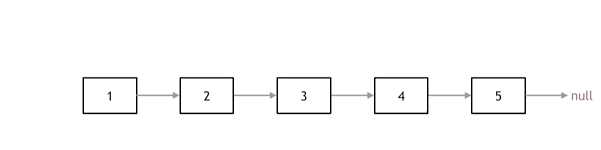
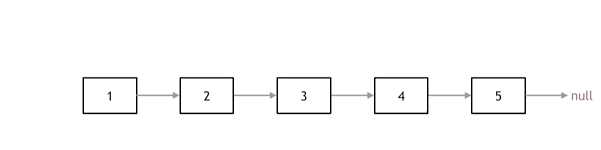

剑指offer06题解
题目
输入一个链表的头节点，从尾到头反过来返回每个节点的值（用数组返回）。
示例 ：
输入：head = [1,3,2]
输出：[2,3,1]
限制:
0 <= 链表长度 <= 10000
单链表的定义：
1 | struct ListNode { |
题解
方法一：栈
思路
将链表反向输出，类似于先进的后出，因此便想到使用辅助栈。遍历链表，依次将数压入栈，最后出栈，实现链表中的数反向输出。(这个方法需要开辟新的栈空间)
代码
1 | class Solution { |
法一PS
既然想到了用栈来实现这个函数，而递归在本质上就是一个栈结构，于是很自然地又想到了用递归来实现。要实现反过来输出链表，我们每访问到一个节点的时候，先递归输出它后面的节点，再输出该节点自身，这样链表的输出结果就反过来了。(不需要开辟栈空间)
代码
1 | class Solution { |
方法二：翻转链表
思路
如果题目要求再严苛一些，不让开辟新的辅助栈空间，我们便可以将链表翻转。链表翻转的难点在于它会用到多个指针，需要正确理解指针的含义：指针(pointer)是“指向(point to)”另外一种类型的复合类型。与引用类似，指针也实现了对其他对象的间接访问。
 

抛开题目我们来把翻转链表的实现捋清楚：我们先定义一个指针cur，指向头结点，再定义一个指针pre，并初始化为NULL。如图可知，要想实现链表翻转主要就是这两个指针。然而我们还需要定义一个指针temp用来保存cur后的节点；那为什么要保存这个节点呢？链表跟数组不同，它在内存中的排列不是连续的，不保存便会使得链表断链。我们不妨设想一下，如果我们不用一个指针保存cur后一个节点，当前cur指向”1”，cur->next指向”2”，当我们直接将cur->next指向pre，之后我们便无妨访问到”2”，导致链表断链！所以总的流程便是：用指针pre和cur指向链表中的两个节点，并且将cur后面的节点用temp保存，接着将pre和cur指向翻转，反转后，pre和cur后移，循环操作直到cur指向NULL。退出循环，链表翻转完毕，返回pre节点，pre指针就指向翻转后链表的头结点。
回到题目中，题目中已经定义了链表头指针head，其作用便是GIF图中的指针cur。
代码
1 | class Solution { |
法二PS
递归法相对抽象一些，但是其实和双指针法是一样的逻辑，同样是当cur为空的时候循环结束，不断将cur指向pre的过程。关键是初始化的地方， 可以看到双指针法中初始化 cur = head，pre = NULL，在递归法中可以从如下代码看出初始化的逻辑也是一样的，只不过写法变了。
代码
1 | class Solution { |
总结
这个题目是关于链表的，首先得了解清楚链表的结构。对于将链表中元素反向输出，可以从先进后出的角度想到用辅助栈，然而递归的本质就是一个栈的结构，所以可以用递归代替新建栈；换个角度，我们可以直接将链表进行翻转，这便涉及到知识点：翻转链表。翻转链表需要用到双指针，所以这又是对于指针知识点的考察。清楚地了解指针的知识，才能更好的理解翻转链表过程中，指针的变换操作。所以基础知识很重要，不能麻木追求新的知识，只有将基础知识掌握到位，才能很好的学习掌握新知识。(基础不牢，地动山摇！！！)


微信号:Shaun_cy
QQ号:1207444851